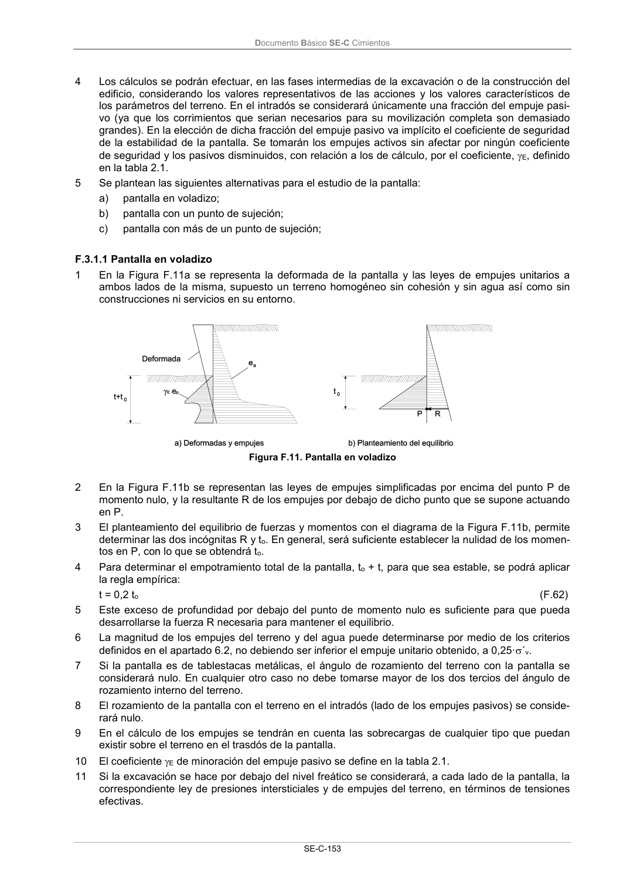

DB-SE-C · Página 158 · versión 2019-12-20
SHA256: a71133f4b0dca253e45ea3071c70f2a512354bcc5cd841bf89b1a502f567ac5e · página física 158 de 165 · métodos de encabezado
solo si están cotejados.
Documento · ← p. 157 · p. 159 →
Formatos: Markdown · JSON de bloques · PDF p. 158 · imagen PNG
Documento Básico SE-C Cimientos
SE-C-153
4
Los cálculos se podrán efectuar, en las fases intermedias de la excavación o de la construcción del
edificio, considerando los valores representativos de las acciones y los valores característicos de
los parámetros del terreno. En el intradós se considerará únicamente una fracción del empuje pasi-
vo (ya que los corrimientos que serian necesarios para su movilización completa son demasiado
grandes). En la elección de dicha fracción del empuje pasivo va implícito el coeficiente de seguridad
de la estabilidad de la pantalla. Se tomarán los empujes activos sin afectar por ningún coeficiente
de seguridad y los pasivos disminuidos, con relación a los de cálculo, por el coeficiente, E, definido
en la tabla 2.1.
5
Se plantean las siguientes alternativas para el estudio de la pantalla:
a)
pantalla en voladizo;
b)
pantalla con un punto de sujeción;
c)
pantalla con más de un punto de sujeción;
F.3.1.1 Pantalla en voladizo
1
En la Figura F.11a se representa la deformada de la pantalla y las leyes de empujes unitarios a
ambos lados de la misma, supuesto un terreno homogéneo sin cohesión y sin agua así como sin
construcciones ni servicios en su entorno.
Figura F.11. Pantalla en voladizo
2
En la Figura F.11b se representan las leyes de empujes simplificadas por encima del punto P de
momento nulo, y la resultante R de los empujes por debajo de dicho punto que se supone actuando
en P.
3
El planteamiento del equilibrio de fuerzas y momentos con el diagrama de la Figura F.11b, permite
determinar las dos incógnitas R y to. En general, será suficiente establecer la nulidad de los momen-
tos en P, con lo que se obtendrá to.
4
Para determinar el empotramiento total de la pantalla, to + t, para que sea estable, se podrá aplicar
la regla empírica:
t = 0,2 to
(F.62)
5
Este exceso de profundidad por debajo del punto de momento nulo es suficiente para que pueda
desarrollarse la fuerza R necesaria para mantener el equilibrio.
6
La magnitud de los empujes del terreno y del agua puede determinarse por medio de los criterios
definidos en el apartado 6.2, no debiendo ser inferior el empuje unitario obtenido, a 0,25·´v.
7
Si la pantalla es de tablestacas metálicas, el ángulo de rozamiento del terreno con la pantalla se
considerará nulo. En cualquier otro caso no debe tomarse mayor de los dos tercios del ángulo de
rozamiento interno del terreno.
8
El rozamiento de la pantalla con el terreno en el intradós (lado de los empujes pasivos) se conside-
rará nulo.
9
En el cálculo de los empujes se tendrán en cuenta las sobrecargas de cualquier tipo que puedan
existir sobre el terreno en el trasdós de la pantalla.
10
El coeficiente E de minoración del empuje pasivo se define en la tabla 2.1.
11
Si la excavación se hace por debajo del nivel freático se considerará, a cada lado de la pantalla, la
correspondiente ley de presiones intersticiales y de empujes del terreno, en términos de tensiones
efectivas.
